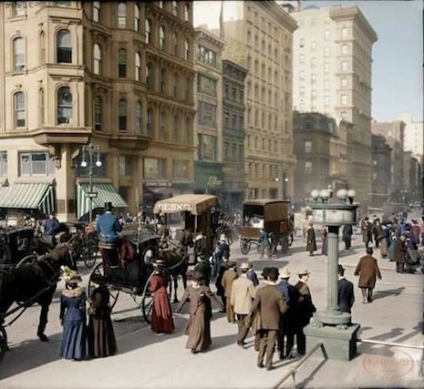

"Every face has a story; every street has a pulse."
I have always believed that a photograph isn't just a record of what happened, but a feeling frozen in
time.
I always enjoy a lot unfreezing this frozen moments and feelings by going through/looking at different
photos which makes me feel alive.